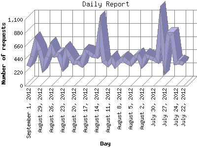

The Daily Report identifies the activity for each day within the reporting period. Remember that one page hit can result in several server requests as the images for each page are loaded.

| Day | Number of requests | Number of page requests | |
|---|---|---|---|
| 1. | July 22, 2012 | 372 | 18 |
| 2. | July 23, 2012 | 392 | 16 |
| 3. | July 24, 2012 | 388 | 40 |
| 4. | July 25, 2012 | 864 | 56 |
| 5. | July 26, 2012 | 859 | 33 |
| 6. | July 27, 2012 | 429 | 31 |
| 7. | July 28, 2012 | 1,006 | 31 |
| 8. | July 29, 2012 | 422 | 16 |
| 9. | July 30, 2012 | 449 | 18 |
| 10. | July 31, 2012 | 479 | 36 |
| 11. | August 1, 2012 | 502 | 17 |
| 12. | August 2, 2012 | 362 | 30 |
| 13. | August 3, 2012 | 510 | 17 |
| 14. | August 4, 2012 | 479 | 19 |
| 15. | August 5, 2012 | 373 | 24 |
| 16. | August 6, 2012 | 402 | 20 |
| 17. | August 7, 2012 | 455 | 19 |
| 18. | August 8, 2012 | 405 | 12 |
| 19. | August 9, 2012 | 339 | 28 |
| 20. | August 10, 2012 | 440 | 22 |
| 21. | August 11, 2012 | 353 | 23 |
| 22. | August 12, 2012 | 407 | 21 |
| 23. | August 13, 2012 | 916 | 45 |
| 24. | August 14, 2012 | 496 | 44 |
| 25. | August 15, 2012 | 503 | 37 |
| 26. | August 16, 2012 | 562 | 21 |
| 27. | August 17, 2012 | 573 | 41 |
| 28. | August 18, 2012 | 350 | 18 |
| 29. | August 19, 2012 | 390 | 23 |
| 30. | August 20, 2012 | 389 | 34 |
| 31. | August 21, 2012 | 486 | 18 |
| 32. | August 22, 2012 | 585 | 31 |
| 33. | August 23, 2012 | 342 | 30 |
| 34. | August 24, 2012 | 518 | 34 |
| 35. | August 25, 2012 | 506 | 29 |
| 36. | August 26, 2012 | 651 | 29 |
| 37. | August 27, 2012 | 487 | 41 |
| 38. | August 28, 2012 | 332 | 29 |
| 39. | August 29, 2012 | 589 | 31 |
| 40. | August 30, 2012 | 727 | 60 |
| 41. | August 31, 2012 | 481 | 35 |
| 42. | September 1, 2012 | 332 | 38 |
Most active day August 30, 2012 : 60 pages sent. 1,006 requests handled.
Daily average: 28 pages sent. 497 requests handled.
This report was generated on September 1, 2012 22:18.
Report time frame April 11, 2012 00:05 to September 1, 2012 23:28.
| Web statistics report produced by: analog 5.1 / Report Magic 2.21 |